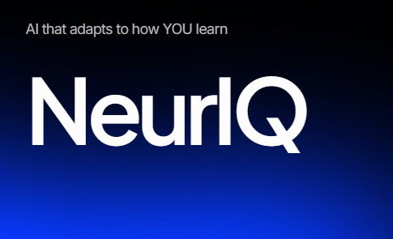
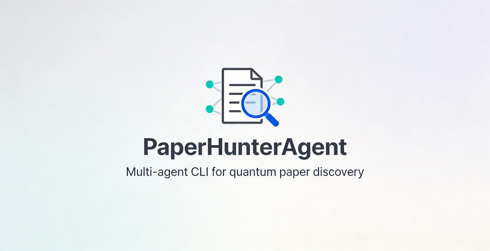

Shipped Products
Compiler
A prompt optimization engine built to slash LLM token costs without degrading output quality. Features a local heuristic engine, RAG context management, and a seamless Chrome extension.

NeurIQ
An adaptive learning management system leveraging cognitive AI. It utilizes metacognitive tracking and dynamic content generation to tailor education to individual learning dynamics.

PaperHunterAgent
Automatically searches arXiv and Semantic Scholar for the latest quantum science papers, filters by relevance, and generates structured Markdown summaries with concept maps. Built for PhD students and researchers who need dense, structured digests of new papers without manual scraping — complete with TL;DR, key equations, and Mermaid graphs.

VibeGraph
Transforms any Python codebase into an interactive call graph with node-level AI explanations, learning path suggestions, and real-time 'ghost runner' execution visualization. Designed for developers who learn by vibing with code but need structure — ask questions about any function, generate step-by-step learning orders, or watch AI traverse the execution path live.